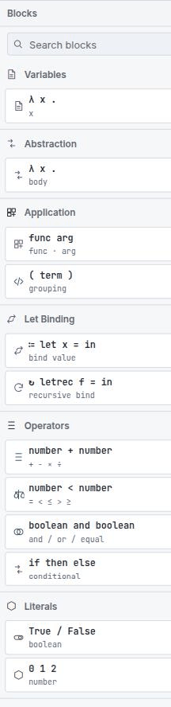

Twelve blocks, six categories
The toolbox is deliberately small. A language with three constructs does not need forty blocks, and keeping the palette short means every block in it is one you will actually use.
The toolbox

| Category | Block | Sub-label | Meaning |
|---|---|---|---|
| Variables | λ x . x | x |
A variable reference. On the canvas it reads bound x. |
| Abstraction | λ x . body | body |
Binds a parameter over a body. The only binder in the language apart from
let. |
| Application | func arg | func · arg |
Applies a function to an argument. Left-associative. |
| Application | ( term ) | grouping |
Parentheses. No effect on evaluation; controls how text and derivations bracket. |
| Let Binding | ≔ let | bind value |
let x = … in …. Generalised, so polymorphic. |
| Let Binding | ↻ letrec | recursive bind |
letrec f = … in …. Monomorphic. |
| Operators | number + number | + − × ÷ |
Arithmetic on int. The operator is a dropdown on the block. |
| Operators | number < number | = < ≤ > ≥ |
Comparison. Takes two ints, yields bool. |
| Operators | boolean and boolean | and / or / equal |
Boolean connectives on bool. |
| Operators | if then else | conditional |
Both branches must agree on a type; the condition must be bool. |
| Literals | True / False | boolean |
A bool literal. |
| Literals | 0 1 2 | number |
An int literal. |
What a block says on the canvas
The table above is the palette: the card you drag from. Once a block is on the canvas it labels itself in words rather than symbols, so a term reads like a sentence:
| Block | Reads on the canvas |
|---|---|
| Variable | bound x |
| Abstraction | lambda, variable x · body |
| Application | application of f over a, drawn inline |
| Parentheses | parentheses term |
let / letrec |
let id · = · in |
| Number literal | ℤ followed by the value |
| Boolean literal | a bare true / false dropdown |
| Operators and comparison | just the operand sockets and the operator dropdown —
+ − × ÷, = < ≤ > ≥,
and / or / equal |
The operator cards read number + number and boolean and boolean, but the blocks
themselves no longer print those operand words — the sockets speak for themselves. The
parentheses card says grouping while the block says parentheses, and the
boolean card says True / False where the dropdown offers lower-case
true / false. The card is a label for the palette; the block is the
program.
bound is a fixed part of the block's wording, not a verdict on the name you typed. A
variable with no enclosing binder still reads bound; what tells you it is free is
the inferred type — a fresh type variable such as 'a — in the
Types pane, and the diagnostic if it cannot be resolved.
There is no fixpoint or Y block. Recursion comes from letrec, and the
machine implements it by unfolding the binding when the name is looked up — a rule you can
watch fire as unfold fixpoint in the
Lockstep view.
The Tude renderer
B-Lambda's default renderer is called Tude. It is built on the same family as Blockly's Zelos renderer — so it keeps the modern connection model, with the same drag, snap and highlight behaviour — but it removes the rounded corners.
That single change is deliberate. Rounded blocks read as interlocking toys; square blocks read as nested fragments of program text, which is what a λ-term actually is. Because the corners are square, a term built out of blocks has the same visual nesting as the same term written with brackets, and the reduction views can lay a rewritten term over the original without the shapes fighting each other.
Tude carries the idea further than shape alone. It sets its block text in a monospace face, tightens the gaps between tokens and the padding inside fields, and keeps its connectors small and flat — all so that a row of blocks occupies about as much width as the corresponding line of text would. Switch to Zelos or Thrasos and the same program will render noticeably wider and in a proportional face; nothing about its meaning changes, but it stops reading like a line of code.
You can switch to Zelos (rounded) or Thrasos (Blockly's classic renderer) from the Renderer menu at any time; the choice is remembered. Every figure in this help uses Tude.
Grammatical colours
Block colour is assigned by grammatical family, not per block. Once you have the families, you can read the shape of an unfamiliar program from across the room:
| Family | Blocks |
|---|---|
| Binding | let, letrec, abstraction — anything that introduces
a name |
| Application | application, parentheses |
| Control | if / then / else |
| Operator | arithmetic, comparison, boolean |
| Literal | numbers, booleans |
| Reference | variables |
The palette is theme-aware: switching between the light and dark workbench themes recolours the blocks to keep contrast, rather than leaving light-theme colours on a dark canvas.
This is worth being careful about if you also use MnL, where block colour encodes the type. In B-Lambda colour encodes the grammatical category, and the type is shown separately — in the block's comment report, in the Types tab, and in the generated code's type comments.
Operators
The three operator blocks each carry a dropdown rather than existing once per symbol, which keeps the toolbox short and lets you change an operator without rebuilding its operands.
| Block | Operators | Type |
|---|---|---|
| Arithmetic | + − × ÷ |
int → int → int |
| Comparison | = < ≤ >
≥ |
int → int → bool |
| Boolean | and or equal |
bool → bool → bool |
Integer division
The only numeric type is int, and division has to respect that. So ÷
is integer division: it truncates toward zero.
121 / 100 → 1
7 / 2 → 3
(0 - 7) / 2 → -3 -- toward zero, not toward -∞
7 / 0 → 0 -- not Infinity, not NaNThis is a design choice, not an oversight. The alternative — producing
Infinity or NaN — would mean a well-typed int term
could evaluate to something that is not an int, which would break the property that
the type system and every one of the nine compiler stages rely on. Returning 0
keeps evaluation total and keeps the type honest.
Truncation toward zero is also what makes mod expressible, which is how the
GCD (Euclid) example works without a remainder operator.
Searching the toolbox
The field at the top of the sidebar filters every category at once; press / to jump to it. Blocks can be added either by dragging or by clicking — a click drops the block into the workspace centre, which is quicker when you are assembling something with the keyboard.
If a search matches nothing the sidebar says so plainly rather than showing an empty list.